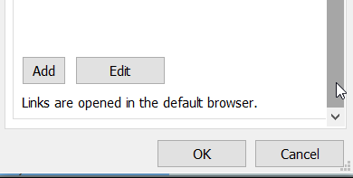
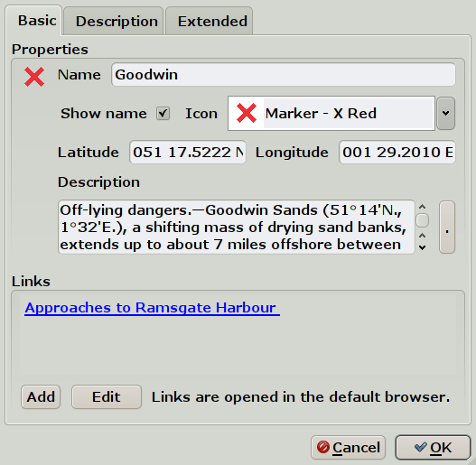
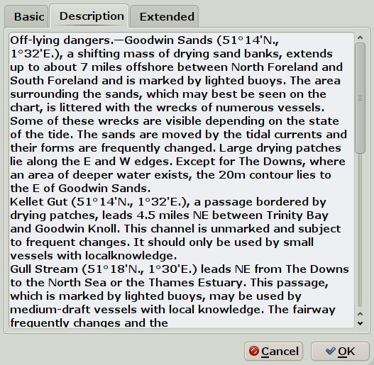
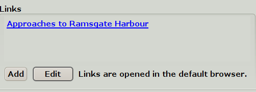
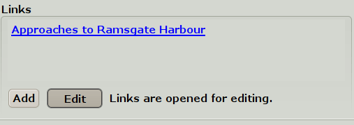
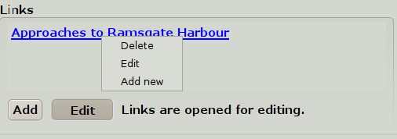
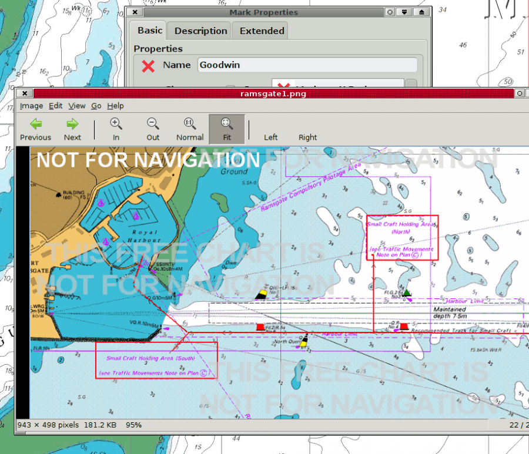

For the basics of marks see this page: Marks and Routes
The properties of Extended marks described on this page expands the use of marks.
It is now possible, for example, to make a interactive Cruising Pilot.
An extended mark is sometimes called a POI, a point of interest.
The “Mark/WP Properties” looks like this for a default mark.

The dialog is available by double-clicking the mark, in the right-click menu or through the Route Manager.


Links: Marks can, as an option, have embedded links to the Internet or the the local computer. These are either opened in the default browser or through the default application, for example for pictures or pdf files. For security reasons, the links does not work for launching other programs.
Create a link by pressing Add. Give the link a good description in the new dialog. Enter an Internet address in URL or find a local file through the button Local File..
The new link will appear under Links. Add more links as required.
Edit links by pressing the “Edit” button. The description will change from “Links are opened in the default browser.” to “ Links are opened for editing” when the button is pressed. The color of the “Edit” button gets a grayer shade when it is pressed down. Press once more to release the button. Press once - the button is down. Press again - the button is released and goes up.


Right-click an existing link for a related action menu.

In the illustrated case, the link was to a local JPG picture, that opens in the default program associated with the jpg extension.

If the mark belongs to a Layer, it can't be changed. A warning about this appears above the name of the mark
This is simply an expanded view of the Description box in the Basic tab.
Show on Chart: Untick this box, and the mark will not show on the chart. To make it visible again, use the Route Managers Waypoint Tab. Click the “Icon” column, to the far left, on the line with the waypoint.
GUID is a unique identifier for the mark.